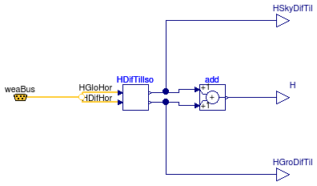
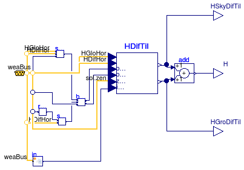
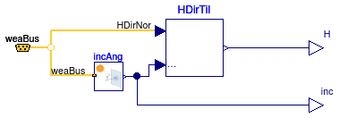

Package with models to compute solar irradition
Extends from Modelica.Icons.VariantsPackage (Icon for package containing variants).
| Name | Description |
|---|---|
| DiffuseIsotropic | Diffuse solar irradiation on a tilted surface with an isotropic sky model |
| DiffusePerez | Hemispherical diffuse irradiation on a tilted surface using Perez's anisotropic sky model |
| DirectTiltedSurface | Direct solar irradiation on a tilted surface |
| Collection of models that illustrate model use and test models | |
| Package with base classes for Buildings.BoundaryConditions.SolarIrradiation |
Diffuse solar irradiation on a tilted surface with an isotropic sky model

This component computes the hemispherical diffuse irradiation on a tilted surface using an isotropic model. The irradiation is a sum composed of diffuse solar irradiation and radiation reflected by the ground. For a definition of the parameters, see the User's Guide.
Extends from Buildings.BoundaryConditions.SolarIrradiation.BaseClasses.PartialSolarIrradiation (Partial model that is used to compute the direct and diffuse solar irradiation).
| Type | Name | Default | Description |
|---|---|---|---|
| Angle | til | Surface tilt [rad] | |
| Real | rho | 0.2 | Ground reflectance |
| Boolean | outSkyCon | false | Output contribution of diffuse irradiation from sky |
| Boolean | outGroCon | false | Output contribution of diffuse irradiation from ground |
| Type | Name | Description |
|---|---|---|
| output RealOutput | H | Radiation per unit area [W/m2] |
| Bus | weaBus | Bus with weather data |
| output RealOutput | HSkyDifTil | Diffuse solar irradiation on a tilted surfce from the sky |
| output RealOutput | HGroDifTil | Diffuse solar irradiation on a tilted surfce from the ground |
Hemispherical diffuse irradiation on a tilted surface using Perez's anisotropic sky model

This component computes the hemispherical diffuse irradiation on a tilted surface using an anisotropic sky model proposed by Perez. For a definition of the parameters, see the User's Guide.
Extends from Buildings.BoundaryConditions.SolarIrradiation.BaseClasses.PartialSolarIrradiation (Partial model that is used to compute the direct and diffuse solar irradiation).
| Type | Name | Default | Description |
|---|---|---|---|
| Angle | til | Surface tilt [rad] | |
| Real | rho | 0.2 | Ground reflectance |
| Angle | lat | Latitude [rad] | |
| Angle | azi | Surface azimuth [rad] | |
| Boolean | outSkyCon | false | Output contribution of diffuse irradiation from sky |
| Boolean | outGroCon | false | Output contribution of diffuse irradiation from ground |
| Type | Name | Description |
|---|---|---|
| output RealOutput | H | Radiation per unit area [W/m2] |
| Bus | weaBus | Bus with weather data |
| output RealOutput | HSkyDifTil | Hemispherical diffuse solar irradiation on a tilted surfce from the sky |
| output RealOutput | HGroDifTil | Hemispherical diffuse solar irradiation on a tilted surfce from the ground |
Direct solar irradiation on a tilted surface

This component computes the direct solar irradiation on a tilted surface. For a definition of the parameters, see the User's Guide.
Extends from Buildings.BoundaryConditions.SolarIrradiation.BaseClasses.PartialSolarIrradiation (Partial model that is used to compute the direct and diffuse solar irradiation).
| Type | Name | Default | Description |
|---|---|---|---|
| Angle | til | Surface tilt [rad] | |
| Angle | lat | Latitude [rad] | |
| Angle | azi | Surface azimuth [rad] |
| Type | Name | Description |
|---|---|---|
| output RealOutput | H | Radiation per unit area [W/m2] |
| Bus | weaBus | Bus with weather data |
| output RealOutput | inc | Incidence angle [rad] |